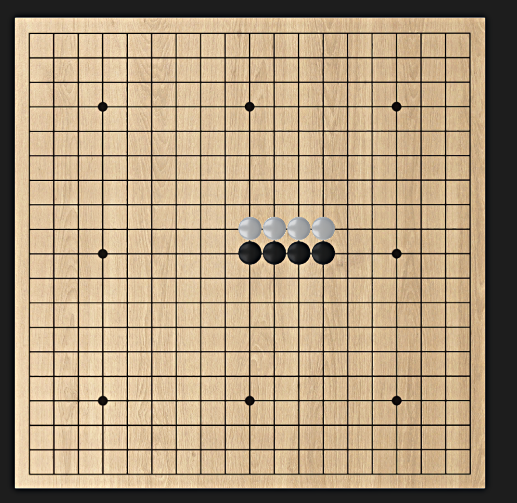

나만의 로직, 동적 라이브러리 구현
오목의 특징

돌을 놓았을 때 특정 방향에 같은 색깔의 돌이 있는지를 구분할 수 있는가?
이게 핵심 요소라고 생각합니다.
오목의 규칙은 간단합니다.
같은 방향으로 똑같은 색깔의 돌이 5개가 있으면 게임이 끝납니다.
따라서 현재 턴과 다른 돌이 있는 방향은 필요가 없습니다.
그래서 저는 내가 원하는 값이 어떤 방향에 있는지 찾는 함수를 만들었습니다.
이를 저는 처음에는 일반 함수로 구현을 하였습니다.
그리고 이후 다른 보드게임들을 만들어 보면서 각각 게임들에서 비슷한 기능이 담긴 함수들이 꽤 있다는 것을 느꼈습니다.
그래서 "공통된 부분을 동적 라이브러리(DLL)로 만들 수 있지 않을까?" 라는 생각을 하였고
이를 직접 DLL 파일을 제작하여 게임을 다시 만들어 보았습니다.
그 결과 더 안정적이고 더 빠르게 게임을 제작할 수 있었습니다.